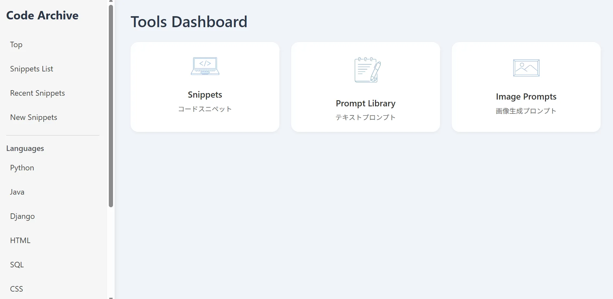

Django HTML/CSS/JS
Snippet App
Username: testuser
Password: testpass123

Overview
コードスニペット・テキストプロンプト・画像プロンプトをカテゴリ別に整理・検索・管理できる Django アプリです。
Function-Based Views（FBV）を採用し、認証・カテゴリ管理・検索機能・CRUD機能を実装しています。
本番環境は Oracle Cloud Infrastructure（OCI）上に構築し、
PostgreSQL・Gunicorn・Nginx・Let's Encrypt を利用した構成で運用しています。
Renderでの運用からOCIへの移行を行い、
Linuxサーバー構築からHTTPS化までを自身で実装しました。
Tech Stack
- Python / Django
- PostgreSQL
- HTML / CSS / JavaScript
- Bootstrap 5
- Pillow（画像アップロード機能）
- Oracle Cloud Infrastructure (OCI)
- Ubuntu
- Nginx
- Gunicorn
- Let's Encrypt
Features
- スニペット管理 — コードの登録・編集・削除・検索
- プロンプト管理 — テキスト生成AI向けプロンプトの管理
- 画像プロンプト管理 — 画像生成AI向けプロンプトの管理
- 画像アップロード機能 — ImagePromptへの画像登録・管理
- カテゴリ機能 — 言語・カテゴリ・サブカテゴリによる整理
- サイト内検索 — Snippet / Prompt / ImagePrompt 横断検索
- 認証機能 — ログイン・ログアウト・アクセス制御
Key Points
クラスベースビューではなく Function-Based Views を採用し、
リクエストからレスポンスまでの流れを把握しやすい構成としています。
本番環境では Oracle Cloud 上に Ubuntu サーバーを構築し、
PostgreSQL・Gunicorn・Nginx を利用した構成で運用しています。
また、独自ドメインの設定・HTTPS化・Static/Media配信・
Gunicornのsystemd自動起動設定まで実施し、
アプリケーション開発だけでなくインフラ構築まで含めて経験しました。